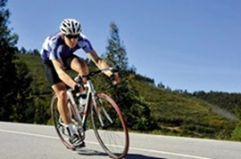
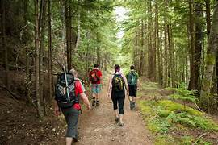

Tabla de Proyectos
| Proyecto | Fecha de Inicio | Estado |
|---|---|---|
| Proyecto estudios FP | 01/2023 | Cursando CFGS de ASIR. En CIDEAD |
| Proyecto Web empresarial | 05/2023 | Realizando pagina web para un proyecto empresarial del transporte |
Estudie la ESO en el colegio Virgen del Pilar, en 1998
Estudie Grado superior en electronica en el IES Poñitecnico. Finalice en 2010
Estudié Ingeniería Informática en la Universidad Carlos III. Me gradué en el año 2015.
He trabajado durante 5 años como tecnico de redes en Networld
Tengo experiencia como programador en c, java y python. Mysoftware. 3 años de experiencia
Actualmente trabajo como desarrollador de software con experiencia en el desarrollo web y móvil. trabajo en New Tech.
Mis principales aficiones incluyen la natacion, ciclismo, hiking y la programación.
 | Proyecto | Fecha de Inicio | Estado |
|---|---|---|
| Proyecto estudios FP | 01/2023 | Cursando CFGS de ASIR. En CIDEAD |
| Proyecto Web empresarial | 05/2023 | Realizando pagina web para un proyecto empresarial del transporte |